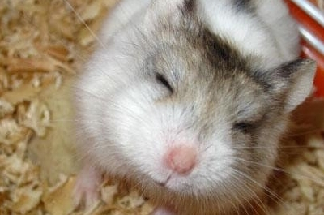
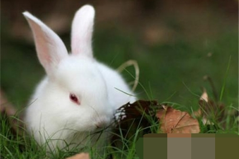
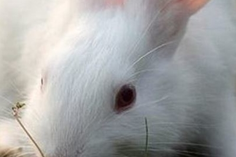
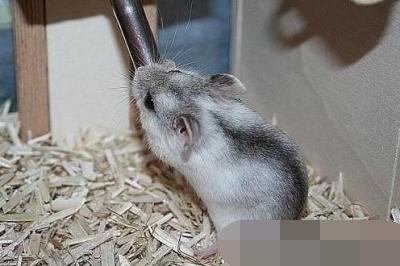
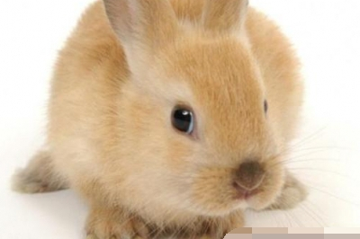

- 垂耳兔的生活习性,垂耳兔兔粮一天喂多少比较合适
-
时间: 2018-5-3 01:45
- 垂耳兔的生活习性 垂耳兔是最迷你、超可爱的兔子，身圆骨重、多毛。由于天生的性情温驯，加上可爱的超小体型，垂耳兔是很适合小朋友的宠物。 一、主要习性是爱乾燥 兔兔怕潮湿，喜欢清洁，且讨厌污秽。因此在饲养管 ...
- 
- 仓鼠皮肤病,仓鼠患上皮肤病症状及治疗
-
时间: 2018-2-23 23:30
- 仓鼠患上皮肤病症状及治疗 仓鼠 皮肤病 症状： 皮肤出现红肿及脱毛的情况。 特征： 爱好清洁的仓鼠，每天都会自行冲凉数次。若居住环境潮湿或肮脏，便很容易患上皮肤病或出现甩毛之情况。仓鼠一旦患上皮肤病，整 ...
- 钢琴兔宠物兔粮算好兔粮吗,十一月兔事与兔病防治
-
时间: 2018-2-23 23:10
- 十一月兔事与兔病防治 本月是立冬、小雪两个节气到来的时间，标志着冬季开始了。虽然初冬的气候不是很冷，但是中午与早晚的温差大， 兔 子易感冒和患病。 一、御寒要早搞 由于温差大和随时有寒流侵袭，兔舍必须及早 ...
- 
- 宠物兔夏季防暑降温小妙招,宠物兔降暑小妙招
-
时间: 2018-2-23 22:50
- 宠物兔降暑小妙招 中国白兔(详情介绍) 夏季天气炎热，宠物兔长着厚厚的皮毛，温度散发不出去很容易导致中暑，主人会在夏季为宠物兔降温，但是宠物兔又很容易着凉，下面小编教你在夏季，为宠物兔正确降温的方法。 ...
- 
- 饲养环境会影响兔兔呼吸系统
-
时间: 2018-2-23 21:50
- 正确饲养用具可减少兔生病 白兔 用正确合适的用具来养兔兔，可以避免兔兔的很多问题。例如很多兔友用买兔兔送的笼子养兔兔，这是不合适的，因为这个笼子非常的狭窄，兔兔在里面很难受，再加上面对一个新的环境，很 ...
- 
- 繁殖黑线仓鼠要注意什么,黑线仓鼠好动易受伤怎么办
-
时间: 2018-2-23 21:30
- 繁殖黑线仓鼠要注意什么 饲养黑线仓鼠是一件快乐的事情，但是繁殖需要计划性，在计划之内你的生活会充满乐趣，但如果是意外或是非计划之内的繁殖，便会让饲主极度困扰。但无论你是否有计划性来让黑线仓鼠繁衍下一代 ...
- 
- 磨光兔的品种简介,如何给磨光兔喂牛奶
-
时间: 2018-2-23 21:10
- 宠物兔品种介绍——磨光兔 磨光兔 磨光兔原产于英格兰，体型非常娇小，可说是真正的“迷你兔”。由于已成为固定的品种，因此不会如夜市出售的“迷你兔”般长大。 一、挑选 看体格：体格发育良好的幼兔身体匀称，肌肉 ...
- 如何选择一只健康的兔子,兔子成年需要多久
-
时间: 2018-2-23 20:50
- 关于兔子的有用小妙方 垂耳兔(详情介绍) 每一只兔子都会面临着死亡 ，你知道吗？兔子的寿命比狗狗还要更短一些，一般在7年左右，如果你的兔子生病了或者不幸死亡了，这个时候应该怎么做呢？ 如果兔子必须留在兽医那 ...